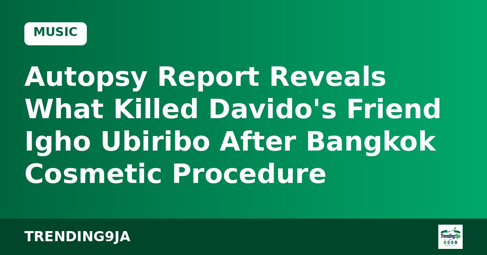

P-Square Feud in Court: Peter Okoye Confirms Receiving Over $800,000 in Royalties
The twins' dispute with brother Jude Okoye plays out before the Federal High Court in Lagos, with the EFCC case adjourned to December.

Photo: Legit.ng
Legit.ng reports that the death of Igho Ubiribo, a 43-year-old British-Nigerian businessman and close friend of singer Davido, has been linked by a UK postmortem to a cosmetic procedure he had in Bangkok.
In March 2026, while on holiday with his wife Danielle Simba Allen, he received 40ml of hyaluronic acid and lidocaine injections at an unnamed clinic. After a massage that followed the procedure, he reported chest pain and lost consciousness twice. He was taken by ambulance to Sukhumvit Hospital, where medics diagnosed a pulmonary blood clot. He did not survive despite 100 minutes of CPR.
At Inner West London Coroners' Court, pathologist John du Parcq concluded the procedure caused the fatal clot. The report states that cellular material found in Ubiribo's lungs matched the hyaluronic acid used in the filler jab.
His funeral was held in Kensington in May, and Davido gave a tribute, calling the loss "heavy" and saying the events "don't feel real."
Sources: Legit.ng